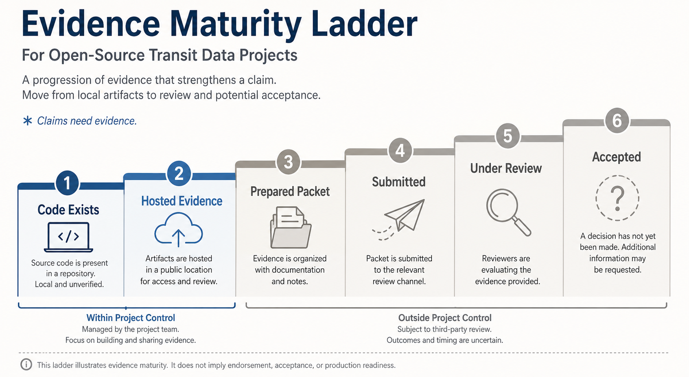

Browser-first review
Start from the private Operations Console and click Agency Operations Cockpit / Start Here.
Review path
The near-term path is browser-first product polish and clear blocker reporting. Connector maturity and release-cut cleanup remain separate later work, not stronger public claims.
Start from the private Operations Console and click Agency Operations Cockpit / Start Here.
Use this GitHub Pages site as documentation only. It orients public readers without replacing the deeper repo docs or hosting the product.
Run clean-checkout diagnostics, local app startup, feed fetches, tests, validators where available, connector checks, and final claim audit.
Keep telemetry, predictor, validator, monitoring/export, feed-consumer metadata, and redaction hardening in a later scoped phase.
make check
make audit-final-claim-review
make external-connection-check
make adapter-conformance
scripts/release-candidate-check.sh --dry-run